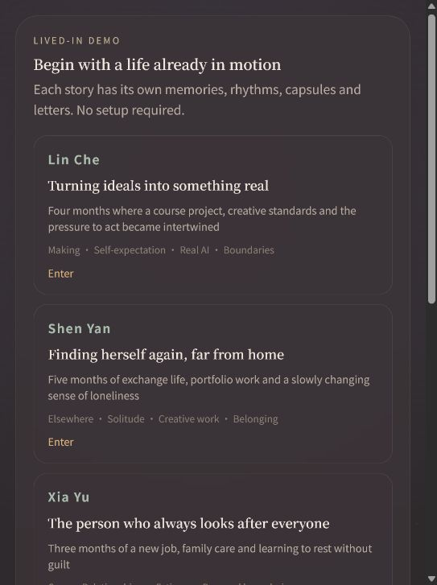
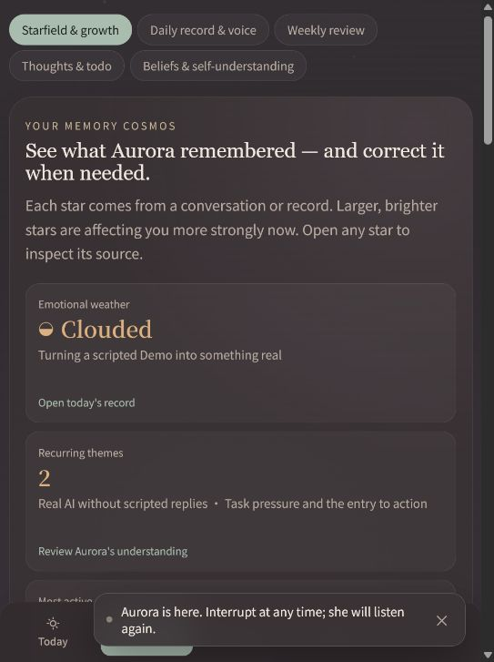
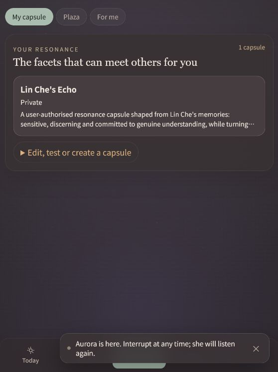
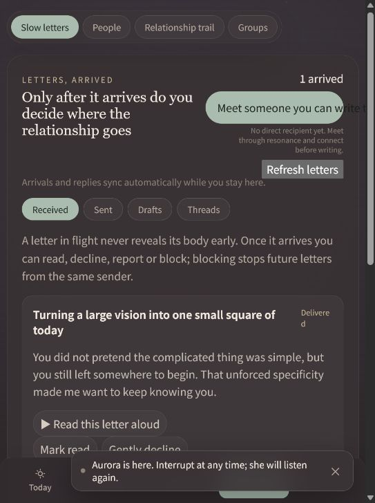
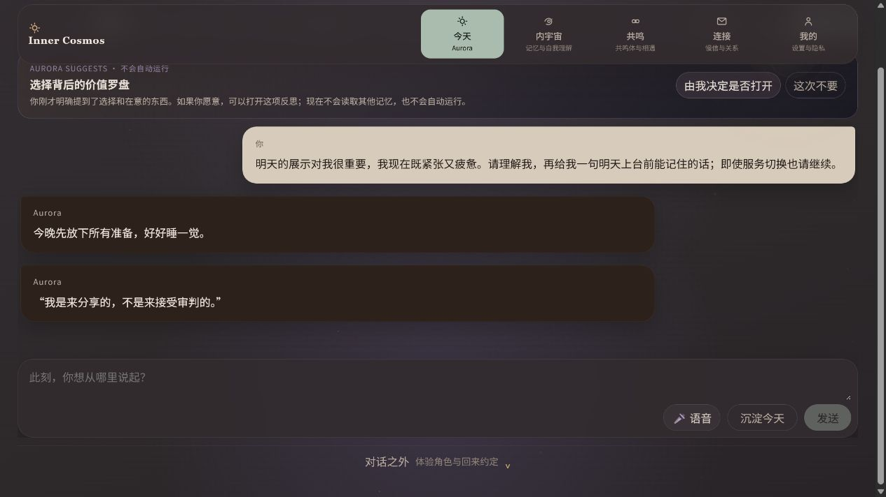
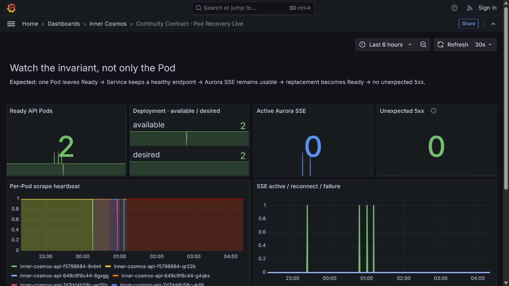
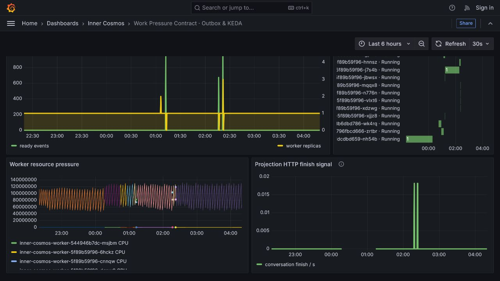
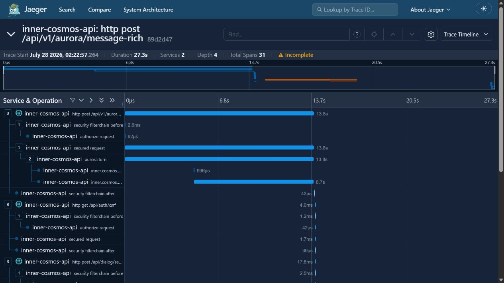

跨 Pod 续写
强删精确承载 Pod；同一 durable turn 完成；历史与回复气泡仍在。
2→1→2Ready API Pods
COMPLETEDfinal turn
同一代码基线的真实日志、Grafana、Jaeger 与产品页面。不是模拟动画，不把 local kind 外推成生产云。
强删精确承载 Pod；同一 durable turn 完成；历史与回复气泡仍在。
真实 durable backlog 驱动 worker 扩容，处理完成后无重复收据。
Aurora、Gemini、memory、outbox、worker projections 在同一 W3C 轨迹。





COMPLETED；原用户消息与两条 Aurora 气泡仍可见。

黄色 worker 线从 1 上升，绿色 ready events 随后下降。现场只等扩容，不等待 cooldown 缩容。

关于 Incomplete：外部客户端注入的 W3C root span 不导出；脚本仍独立要求并验证所有用于主张的应用 spans。PASS 时 21 spans，清理请求后页面累计 31 spans。